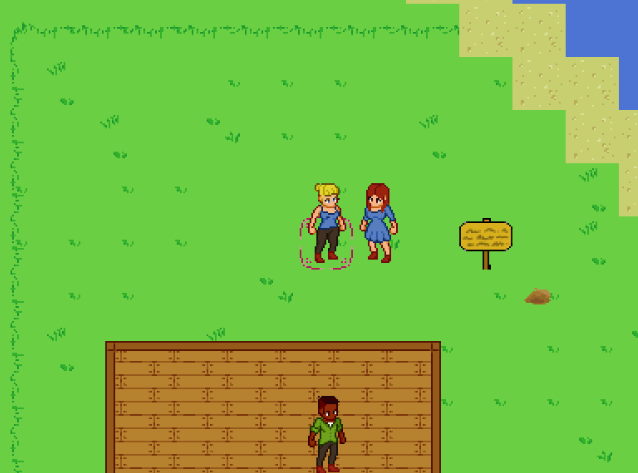

My Projects
Untitled Project: codename "Moon Don't Mountain"
This project is very very very WIP!
Moon Don't Mountain Overview
The Setting
The game takes place on a distant, unnamed, planet. The player is a part of a growing colony whose mission is to develop a thriving outpost. Further details about the world are TBD.
The Gameplay
MDM is your traditional RPG. A vast mojority of the gameplay is going to have a very familiar feel to the Harvest Moon titles, but instead of being just centered around farming, the player will be presented with a wide variety of jobs and tasks to perform.
One key difference thats sets MDM apart from the rest, is our attention to the world itself. MDM's world minimally revolves around the player, that is, the world will continue to progress or suffer whether the player is involved or not, just like how in real life things don't always work out the way we plan. We feel that this will give the world a bit more of a lifelike feel.
Dynamically Generated Resources
Currently, the main attraction of this project is how the worlds resources are determined. We want to guarantee, that no two playthroughs are the same experience. In order to achieve this, during the players hunt for resources, they will come to find that their local recources(plants, animals, ores, etc.) are randomly generated to include custom sprites and stats. These generated properties will play into further game mechanics, such as: Farming, Cooking, Smelting, Weaving, Brewing, etc. A better idea of the full amount of skills will be laid out further into production.